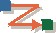

| 工件：信号 |
|  |
|
用途
|
信号的目的是提供从一个对象或实例到另一个对象或实例的单向异步通信。 信号是可以具有操作、属性和关系的工作产品：事件的具体化表示。 |
关系
定制
| 说明选项 | 以 UML 表示：信号。通常也表示为类定型的 <<signal>>。
信号用于定义异步消息传递的实体。它们适用于分发式和并发系统中的通信。避免以“特定于接收器”的方式命名信号 －
这将限制它们的一般性和有用性，记住可以将信号广播到一组对象。重要的是将发送器检测到的感兴趣的事件（该事件提示发送器发送信号）作为对象进行通信。信号还可以有一系列由其属性表示的参数。 可以在信号上提供用于访问这些属性的操作。
由于信号是“工作产品：事件”的具体情况，所以信号的定制取决于“工作产品：事件”的定制。例如，“工作产品：事件”信息可以用文本形式（例如软件体系结构文档中的表）来记录，而特定于信号的属性则以可视模型来记录。 |
|---|
更多信息
© Copyright IBM Corp. 1987, 2006. All Rights Reserved. |